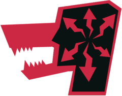
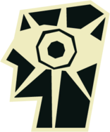
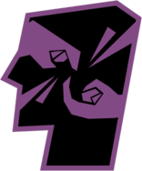
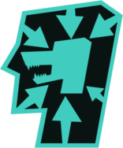
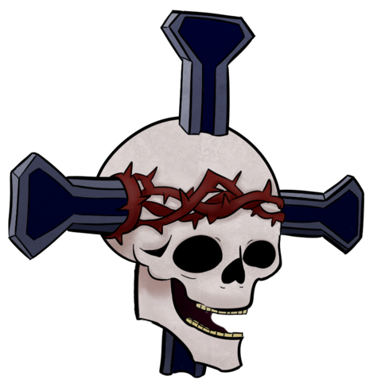

Abnormalities are the creatures that you extract energy from via doing different types of work on. Your job is to sate their needs and desires in any way as to produce the most energy possible. They are categorized in different Danger Levels, that defining how easy they are to contain-that being inversely proportional to how much energy you extract from them. Out of that energy, they also produce specific energy unique to them that allow you to learn more about them and extract unique gear to equip your agents with. We hope you can manage to extract enough energy without letting that many creatures loose out there. Good Luck!




Two types of E.G.O. gear can be extracted(plus a gifted item) from work with abnormalities. Most abnormalities allow a weapon and a suit to be extracted, and every abnormality can gift an employee a small keepsake. Abnormality gear tends to be in the same danger level as the abnormality it's extracted from, but that's not an absolute. Abnormality gear tends to be less effective against abnormalities with a higher danger level, and vice versa, so beware!
